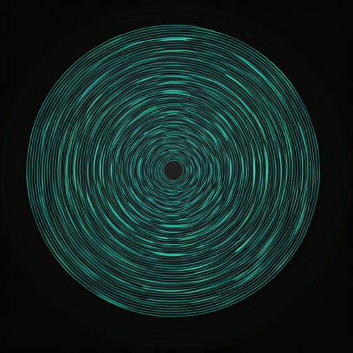

01
Members subscribe
The pilot starts with a CHF 29 monthly membership shaped by local genre interest and neighborhood fit.
Live4Fair is a community-supported system for local live culture - where membership helps pay artists, activate venues, and support the cultural work that makes meaningful nights possible.

Local artists still spend too much time chasing unpaid opportunity. Smaller venues want meaningful programming, but cannot always take the programming risk alone. Cultural workers and coordinators carry invisible labor that rarely gets funded clearly enough to last.
Live4Fair exists to make those relationships more visible and more sustainable: member support becomes a recurring cultural mechanism, not a one-off rescue gesture.
We are not pretending the system is finished. The first Zurich pilot is about transparent rules, disciplined learning, and proving that fairer local culture can be organized in public.
Members subscribe, share their interests, and help fund a recurring pilot rhythm. Live4Fair curates artists, contracts venues, supports cultural production, and reports clearly on where value moved.
The pilot starts with a CHF 29 monthly membership shaped by local genre interest and neighborhood fit.
Each 100-member block supports a 10-artist pool built around quality, local fit, and member resonance.
Underused, community-oriented, or off-peak rooms are matched with events that feel right for the space.
Coordination, production, reporting, and member communication are treated as part of the system, not leftover labor.
Each member block shows what happened across performers, artist-pool support, venue activation, and operations.

One membership can help unlock one monthly room, three performing artists, seven more artists still supported through the pool, and the cultural work required to make the night real. That is the difference between vague support and a civic rhythm you can see.
Live4Fair turns support into a cultural heartbeat people can actually feel.
We are building a fairer way for local culture to move through Zurich: more paid artist opportunity, more activation for underused spaces, more meaningful member participation, and more visible support for the cultural work that keeps scenes alive.
Fairer pay, clearer selection logic, and a visible artist-pool structure tied to real local demand.
Community-first activation for rooms that want the right night, not generic event churn.
Membership becomes participation in a local funding flow, not just access or branding.
Coordination, production, and reporting are treated as essential infrastructure and made visible in the model.